OVERWATCH BEGINNER ASSISTANT
OW
训练官上线
欢迎加入守望先锋，新人。
你可以问我玩法、英雄、克制、阵容、背景故事、活动或版本变化。我会先判断问题类型，再从对应知识库里找答案。
OVERWATCH BEGINNER ASSISTANT
OVERWATCH BEGINNER COMMAND
英雄对位、地图选角、版本活动与赛事资料，一处完成判断。
HERO INTELLIGENCE
胜率是判断环境的参考，不等于英雄克制。可按职责筛选，并查看数据口径。
MAP TACTICS
点击地图，直接向助手询问适合新手的重装选择与分阶段打法。
OFFICIAL LIVE INTEL · VERIFIED 2026.09.20
来源限定为暴雪/国服官网与官方赛事站，并明确标记活动时间和核验时间。
BLIZZCON MYTHIC THANK-YOU
在活动期内完成一场游戏，即可从第 1–14 赛季的符合条件的完整神话套装中选择一套；已经拥有所有基础神话皮肤的玩家可获得 50 神话棱晶。
查看 9 月 12 日官方公告 ↗现在可以参与或领取的内容

JUNKRAT'S LOOT HUNT
三周主题反转玩法和挑战正在开放。活动时间来自 9 月 9 日国服正式版本补丁说明。
国服官方补丁说明 ↗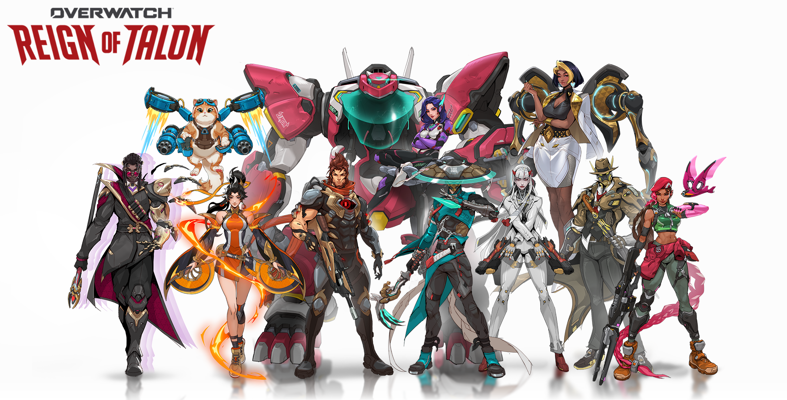
BLIZZCON DIGITAL BUNDLE
礼包可购买至 9 月 28 日，属于付费内容。具体物品与价格应在 Battle.net 商店再次确认。
官方礼包公告 ↗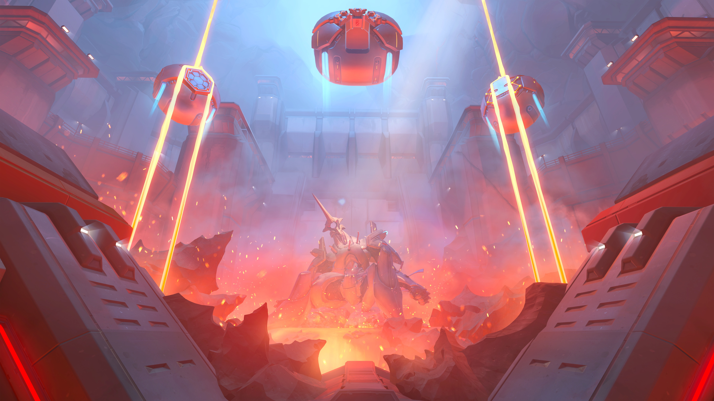
SEASON 5
第 5 赛季将于 10 月 6 日上线，带来新支援英雄 Doctrine、监测站：格里姆火山，以及黑影和路霸的大型重做。
官方发布会汇总 ↗地点、时间与当前状态
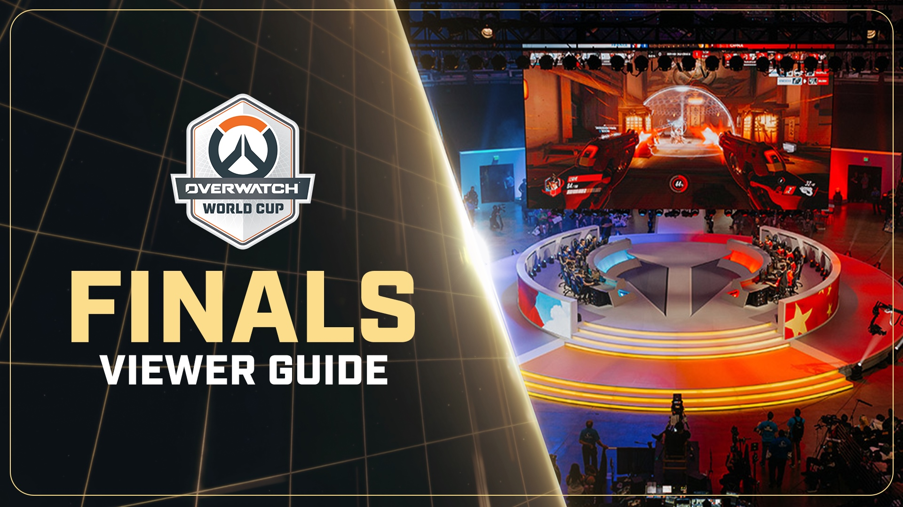
官方赛事宣传图 · OWWC 2026国家队阶段在釜山进行，赛果可在官方赛事页面回看。
韩国在金牌赛中击败沙特阿拉伯，法国获得铜牌。
三个比赛周分别为 10 月 10–11、17–18、24–25 日。
官方竞赛详情列出的比赛窗口为 12 月 2–6 日。
保留资料，但不会混入当前活动


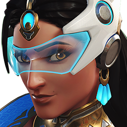
集中削弱生存、主要威能和武器循环。
只摘录会直接影响选角和对局判断的变化。
终极技能消耗降低 6%，可以更频繁地使用全景牢笼。
5v5 粒子屏障冷却从 11 秒延长到 12 秒；投射屏障不变。
弹速 90 → 120 米/秒，基础与追踪弹伤害 9 → 8.5，震地手雷冷却缩短。
传送面板放置范围 30 → 25 米，重复传送冷却 1 → 1.25 秒。

主要攻击更快响应，同时延长旋风疾步与斩地巨剑恢复时间。
生物猫爪弹伤害与治疗 4.5 → 4；救生索增加目标封锁与地形救援规则。
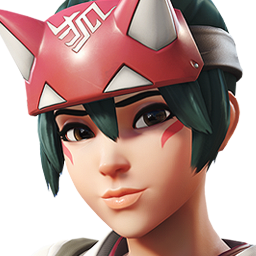
治疗符弹速和追踪距离降低；铃的无敌时间和爆炸半径缩小。

25 点基础生命转化为护甲，近距离生存能力提升。
旧改动保留用于追溯，不直接代表当前数值。
助手中的克制推荐会优先参考这里的当前补丁；但单次热修不会自动让一个英雄从“被克制”变成“绝对克制”。地图、距离、熟练度和阵容仍需一起判断。
查看未摘录英雄、错误修复与设计师观点 ↗OVERWATCH ESPORTS 2026
赛历、赛果、观赛入口与新手观赛指南集中在这里。
金牌赛已于 9 月 13 日结束。法国获得铜牌。
查看完整赛果 ↗具体比赛日与对阵以官方赛程实时显示为准。
先观察双方阵容想在哪个距离交战，再看坦克怎样争夺高台和转角。
重点看第一名阵亡者、关键技能与终极技能，而不是只跟随击杀镜头。
职业队伍依赖高度沟通。学习思路和站位，比机械复制英雄选择更实用。
VIDEO & LIVE DIRECTORY · BILIBILI
从基础教学到娱乐实况，再到职业选手第一视角。卡片均直达 B 站原视频或直播间。
点击进入原直播间；是否开播以 B 站实时状态为准
OA-GUXUE职业重装选手
房间 4792266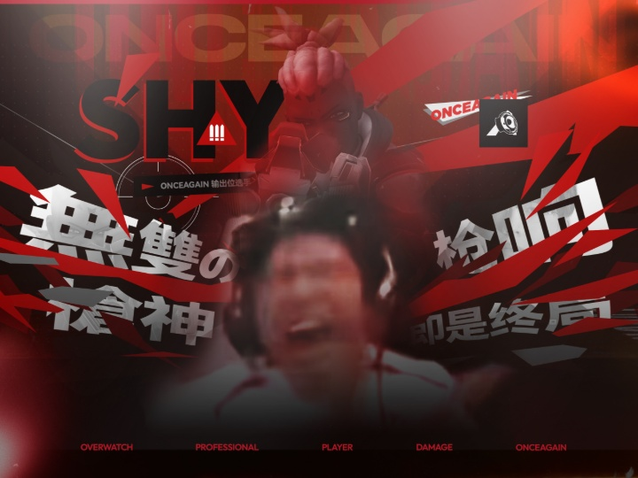
职业选手进入直播间 ↗OA-SHY职业输出选手
房间 6524090Leave / 嘉豪职业输出选手
房间 31294374Farway 远芳芳职业支援选手
房间 925378Kyo_ow支援选手 / 高分主播
房间 7395955OA-Sunzo职业输出选手
房间 30040584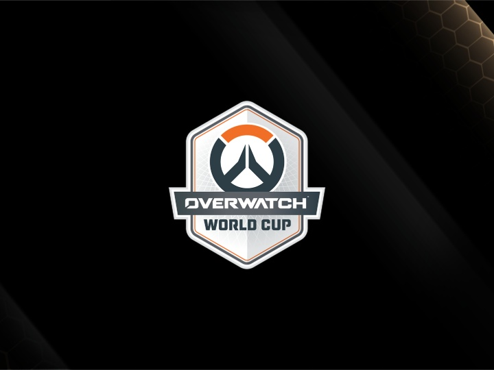
官方赛事进入直播间 ↗守望先锋电竞官方赛事直播与回放入口
房间 23612045先理解规则和职责，再练枪法、地图与模式
守望先锋2026-08-14
从当前版本的基本目标与特工定位开始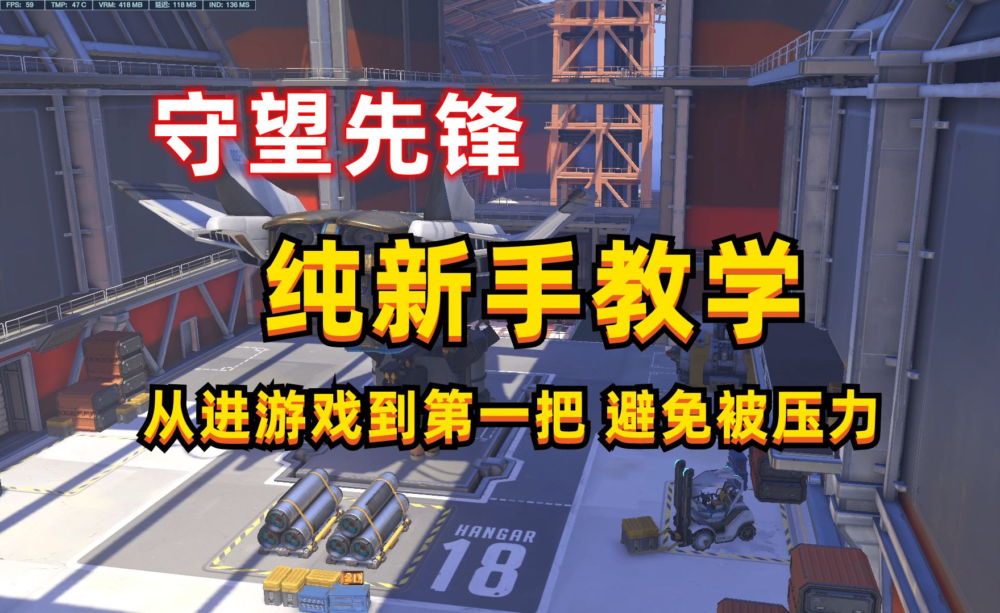
零基础▶只要红茶可以嘛2024-04-25
适合第一次安装、还没打过完整对局的玩家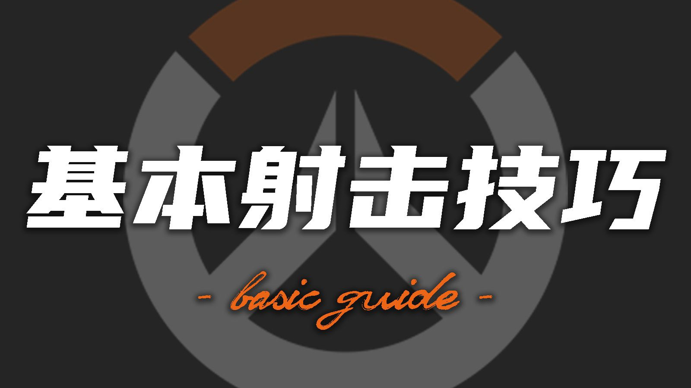
枪法基础▶卡破伏岓2025-02-19
跟枪、预瞄与基础射击习惯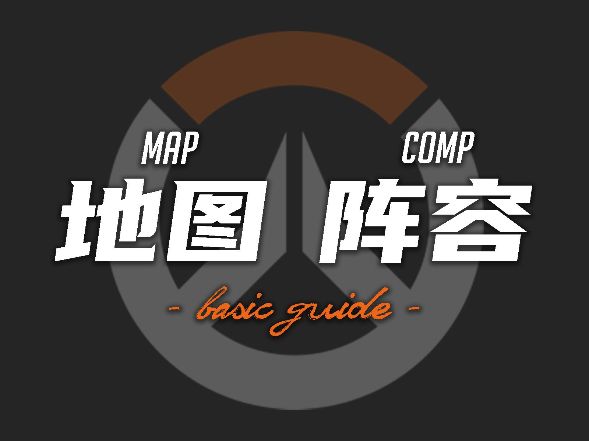
地图选角▶卡破伏岓2025-02-07
理解高台、射程与阵容选择的关系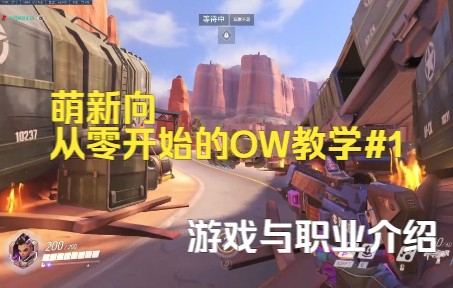
职责模式▶羽黑凛夏2022-04-07
内容较早，适合补基础概念；数值以当前版本为准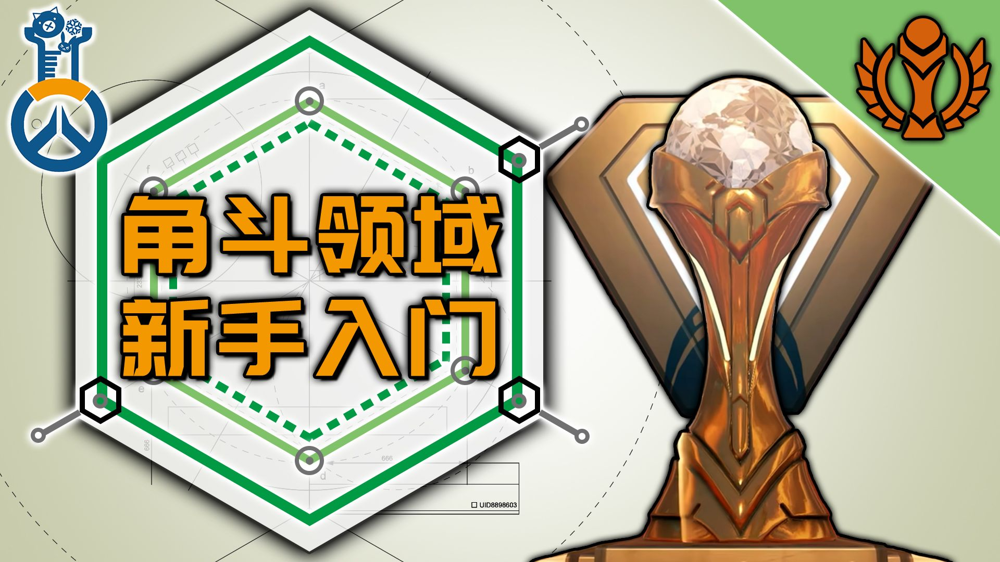
角斗领域▶守望at春语2025-04-23
模式规则、经济与强化选择入门精选鸭皮、陆子由等创作者的守望内容